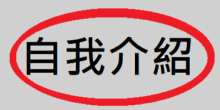
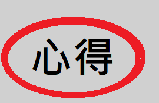

自我介紹
- 大家好我叫汪庭宏，我的興趣是繪畫跟健身，學校剛好有健身房而且有很多的設備可以使用。大家有時間的話可以逛逛。
心得
- 這次期中專案我負責的是影片拍攝與剪輯。雖然我對於如何編輯影音檔沒有那麼在行，但以結果來看應該還算順利。透過這個專案我也學習到了很多額外的知識，像是時間的安排等等。

自我介紹
- 大家好！我叫徐聖皓，我的興趣是跑步、打籃球，個性比較內向害羞，而我目前是系學會的執秘，有關系學的活動都可以問我～歡迎大家多多參與系上的活動
心得
- 這次在做期中專案的過程中，雖然很累很辛苦，但真的學到蠻多的，尤其在製作網頁這個方面，遇到了一些障礙，並想辦法解決，做完後真的是很有成就感

自我介紹
- 大家好！我叫高冠宏，我的興趣是運動、跳舞、跟寫程式。我的職業是全職的模特兒，我也熱衷健身，健身佔我生活裡很重要部分，所以如果也喜歡健身的人如果會去中原大學的健身房一定可以遇到我哦！
心得
- 我覺得藉由這個專案，我體會到實際在網頁排板是一件不簡單的事情。更何況還要實現美術與版面的結合，但有些問題真的是要實際操作過後也才會發現，我很喜歡這次的期中專案！

自我介紹
- 大家好 我叫劉慕二，特色是很高，有200公分，是一位熱愛排球的運優生，然後，如果有對排球喜歡或有興趣的歡迎來請教我喔!
心得
- 在知道這堂課的期中考內容之前，然後經過這幾天的實際操作之後才發覺，網路上的那些網頁能做出來真的不簡單，我很喜歡這次的期中報告，希望我們的網頁能得到高分。


平日開放時間：早上8:30～晚上9:00
假日開放時間：下午1:00～下午5:00
地址：桃園市中壢區中北路200號
電話：032651601